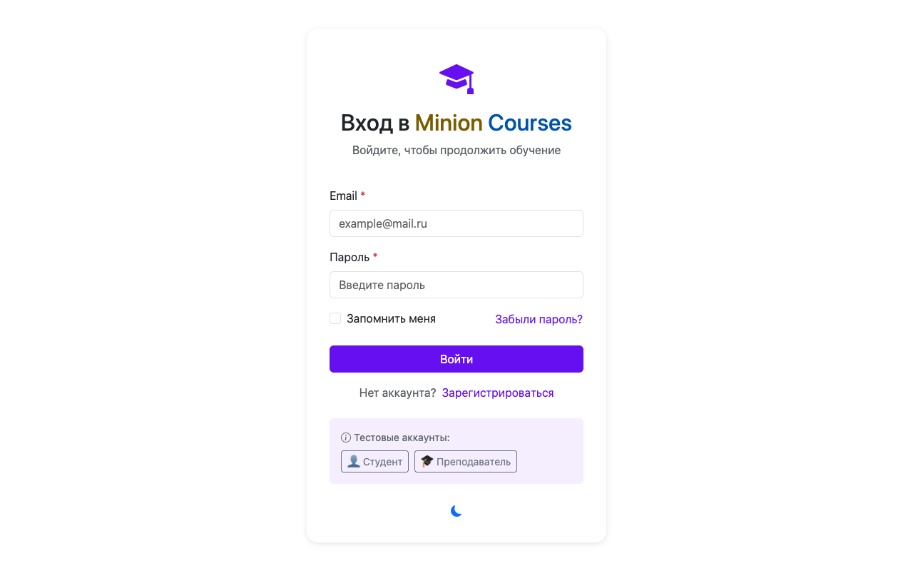
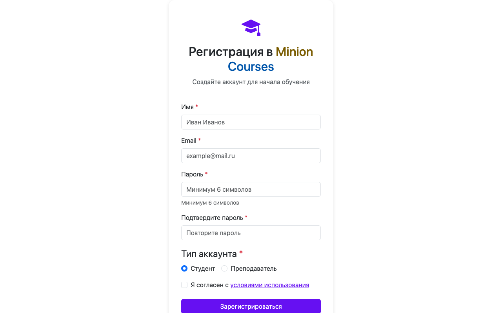
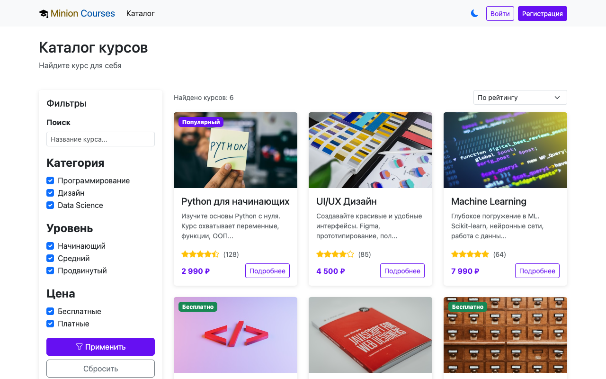
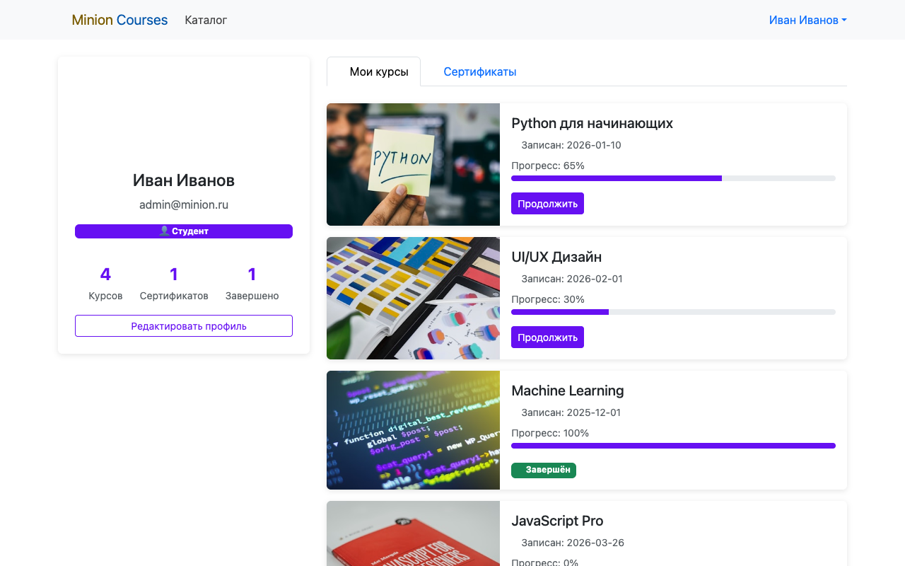
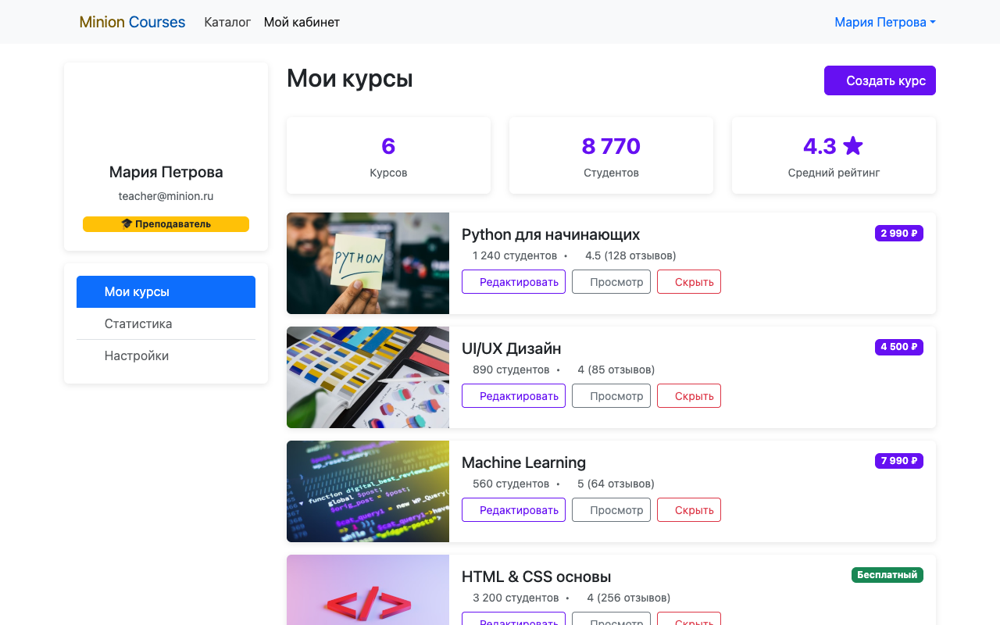

Дисциплина: Фронт-энд разработка
Отчёт
Лабораторная работа №1
Санкт-Петербург
2026 г.
В рамках данной лабораторной работы было предложено выбрать один из нескольких вариантов. Выбранный вариант останется единым на весь курс и будет использоваться в последующих лабораторных работах.
По выбранному варианту необходимо выполнить вёрстку сайта средствами HTML, CSS и Bootstrap. Продумать и реализовать моменты, в которых необходим JS (например, открытие модальных окон).
Выбранный вариант:
Дополнительно было принято решение реализовать полноценный REST-бэкенд на базе
JSON Server (файл db.json), что позволило организовать работу с данными
через HTTP-запросы и продемонстрировать асинхронную загрузку контента.
Разработана файловая структура проекта и базовые стили. Настроена поддержка
светлой и тёмной тем оформления с сохранением выбора в localStorage.
В качестве UI-фреймворка использован Bootstrap 5.3.3; иконки подключены через
Bootstrap Icons 1.11.3 и SVG-спрайт.
Сверстана главная страница (index.html) с секцией-героем, блоком популярных курсов, загружаемых асинхронно из API, и блоком преимуществ платформы. На время загрузки отображаются skeleton-плейсхолдеры.
Рисунок 1 — Главная страница (index.html)
Созданы страницы авторизации (login.html) и регистрации
(register.html). Формы реализованы с Bootstrap Validation API
(needs-validation): при отправке невалидной формы поля подсвечиваются.
Кнопка блокируется и показывает спиннер во время запроса к серверу.

Рисунок 2 — Страница входа (login.html)

Рисунок 3 — Страница регистрации (register.html)
Модуль auth.js хранит JWT-токен и данные пользователя в
localStorage и динамически обновляет навигационную панель:
для неавторизованных — кнопки «Войти» и «Регистрация», для авторизованных —
дропдаун с аватаром и пунктом выхода через модальное подтверждение.
Разработана страница каталога курсов (search.html). Для
отображения использована адаптивная сетка Bootstrap Grid
(row-cols-1 row-cols-md-2 row-cols-xl-3). В боковой панели
реализована фильтрация по трём критериям: категория, уровень и тип цены.
Фильтры — чекбоксы Bootstrap; при изменении любого из них функция
applyFilters() мгновенно скрывает или показывает карточки
без перезагрузки страницы.

Рисунок 4 — Каталог курсов с фильтрацией (search.html)
Разработана страница детального просмотра курса (course.html).
Идентификатор курса передаётся через URL (?id=…), данные
загружаются из API. Для организации информации использован компонент Bootstrap Tabs
(nav-tabs, tab-content): вкладки «Обзор», «Содержание»
и «Обсуждения» переключаются средствами Bootstrap JS. Боковая панель отображает
рейтинг, цену и кнопку записи на курс.
Рисунок 5 — Страница курса (course.html)
Реализован личный кабинет студента (profile.html). Страница
отображает имя, email и статистику пользователя. Раздел «Мои курсы» показывает
список записанных курсов с прогрессом, визуализированным через Bootstrap Progress
(progress-bar). Завершённые курсы отмечены бейджем «Завершён».
Раздел «Сертификаты» выводит список полученных сертификатов.

Рисунок 6 — Личный кабинет студента (profile.html)
Создан личный кабинет преподавателя (teacher.html). На странице
отображается список авторских курсов со статистикой: количество студентов,
средний рейтинг, цена. Кнопка «Создать курс» открывает модальное окно Bootstrap
(data-bs-toggle="modal") с формой ввода названия, описания,
категории, уровня и цены.

Рисунок 7 — Личный кабинет преподавателя (teacher.html)
Для обеспечения доступности на всех страницах добавлены ARIA-атрибуты
(role, aria-label, aria-live),
семантические теги и skip-ссылки для перехода к основному содержимому.
Бэкенд реализован на JSON Server (порт 3001) и запускается командой
npm start.
Рисунок 8 — Тёмная тема оформления
В ходе выполнения лабораторной работы были освоены принципы вёрстки адаптивных веб-приложений с использованием HTML5, CSS3 и фреймворка Bootstrap 5.
На практике применены знания о семантической разметке, системе сеток Bootstrap Grid и утилитарных классах для отступов, типографики и цветов. Реализованы интерактивные компоненты Bootstrap: Modal, Tabs, Dropdown, Progress, Spinner — работающие «из коробки» посредством data-атрибутов.
Закреплены навыки работы с DOM API и Fetch API: написаны скрипты для
асинхронной загрузки данных из JSON Server, динамической фильтрации карточек
курсов, валидации форм и управления состоянием авторизации с хранением данных
в localStorage.
Дополнительно реализованы переключатель светлой/тёмной темы с сохранением выбора между сессиями, skeleton-экраны загрузки и обработка ошибок сети. Все страницы соответствуют базовым стандартам доступности: добавлены ARIA-атрибуты, семантические теги и skip-ссылки.
Разработанный прототип платформы «Minion Courses» полностью соответствует заявленным требованиям предметной области и включает все обязательные страницы: главную, вход, регистрацию, каталог с фильтрацией, страницу курса, личный кабинет студента и кабинет преподавателя.